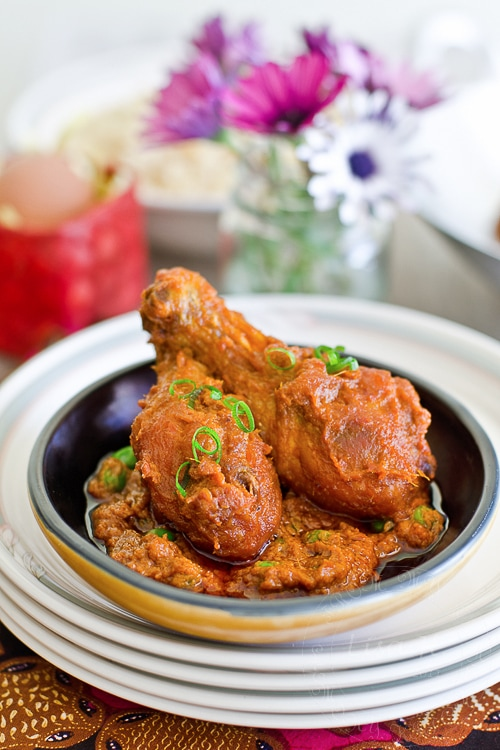

Ayam Masak Merah Recipe

Ayam masak merah is a Malaysian and Singaporean chicken dish. The name literally means chicken
"red-cooked chicken" in English. Popular in both countries, it is a casserole of chicken
pieces in dried chillies sambal. It tends to be a home-cooked dish, so many variations
on the recipe exist.
INGREDIENTS
- 2 x 0.9-1kg chicken, cut into 8 pieces/chicken
- 20 dried chillies, soaked
- 2 red onion
- 5 cloves garlic
- 40 g (2 oz.) ginger
- 25 g (1 oz.) galangal, lengkuas
- 5 lemongrass
- 2-3 star anise
- 4 cloves
- 3 inch cinnamon
- 3 cardamom
- 1 can tomato soup
- 1 can (400ml) coconut milk
- salt to taste
- vegetable oil for deep frying plus ¼ cup extra
- 1 cup peas, optional
INSTRUCTION
- Preparing Chicken. Rub chicken with turmeric and salt. Set aside for 30 minutes.
Heat up the oil in a wok and deep fry the chicken pieces until golden in colour.
Set aside.
- Roughly chopped red onion, ginger, galangal and lemongrass, then transfer to
a blender or food processors. Add in chillies and garlic. Process into a paste.
- Heat up the wok with ½ cup of oil. Sauté the spices : Cinnamon, star anise,
cloves and cardamom until fragrant. Then add in the blended paste. Bring the
heat up until the paste bubble then lower the heat. Simmer till the paste is
thoroughly cooked, fragrant and the oil separates from the paste. Add in
canned tomato soup, coconut milk and chicken pieces. Bring up the heat
for a quick boil, then lower to a simmer and cook until the sauce
thickened. Add peas and season with salt to taste. Garnish with
some spring onion before serving.